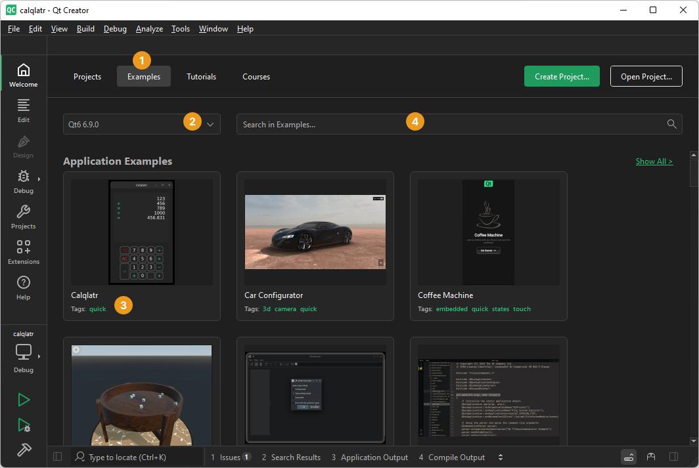
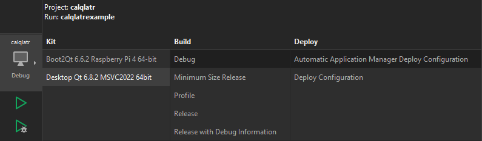

Tutorial: Build and run
To test that your Qt Online Installer installation is successful, open an existing example application project.
To run an example application on an Android or iOS device, you must set up the development environment for Android or iOS. For more information, see Developing for Android and Developing for iOS.
To run an example application on a Boot to Qt device, you must set up Boot to Qt on the development host and create connections between the host and devices. For more information, see Boot to Qt: Documentation.
If you have Qt Design Studio installed, you can open Qt Design Studio examples from Qt Creator in Qt Design Studio.
- In the Welcome mode, select Examples (1).

If you cannot see any examples, check that the list of Qt versions (2) is not empty. If you select a Qt for Android or iOS, you can only see the examples that run on Android or iOS.
- Select an example in the list of examples.
You can also use tags (3) to filter examples. For instance, enter the Boot to Qt tag (commercial only) in the search field (4) to list examples that you can run on Boot to Qt devices.
- In Configure Project, select kits for building the example for the target platforms.

- Select Configure Project.
- To check that you can compile and link the application code for a device, select the Kit Selector and select the kit for the device.

If you installed Qt Creator as part of a Qt installation, it should have automatically detected the installed kit. If you cannot see any kits, see Add kits.
- Select
 (Run) to build and run the application.
(Run) to build and run the application. - To see the compilation progress, select Alt+4 to open Compile Output.
If build errors occur, check that you have a Qt version, a compiler, and the necessary kits installed. If you are building for an Android or iOS device, check that you set up the development environment correctly.
The Build progress bar on the toolbar turns green when you build the project successfully. The application opens on the device.
See also How To: Manage Kits, Open projects, Developing for Android, Developing for iOS, Compile Output, Boot to Qt: Documentation, and Qt Design Studio documentation.